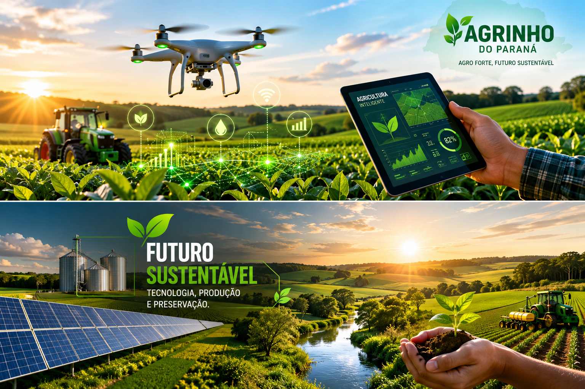

Produção Agrícola
O agronegócio possui grande importância para a economia brasileira...
Entre as principais tecnologias utilizadas atualmente estão drones e irrigação inteligente.
Sustentabilidade no Campo
🌾 Agricultura de Precisão
Uso de sensores e dados para melhorar a produção.
💧 Irrigação Inteligente
Controle automático do uso da água.
☀ Energia Renovável
Produção de energia limpa no campo.

Desafios Ambientais
O agronegócio enfrenta desafios como desmatamento e emissão de carbono.
Soluções e Futuro
O futuro depende da integração entre tecnologia e responsabilidade ambiental.